| FOCO - 004 REVISÃO - 03 DATA 22/05/2024 |
|---|
| FOCO PROCEDIMENTO DA MOEGA |
| Objetivo: Padronizar o trabalho de abastecimento de açúcar nos silos da moega. Passo a passo que possa ter um padrão onde todos os colaboradores devem seguir o que está escrito neste procedimento. A equipe de liderança tem a responsabilidade de fazer cumprir este procedimento. |
| Principais Riscos da Atividade |
| 1. Ruído; 3. Escorregão/Tropeço; 4. Escorregões; 5. Prensamento; 6. Atropelamento. |
Passos para Realização da Atividade |
| 1ª Passo - Colocar EPI's
1°- Colocar os EPI's de uso obrigatório para início das Atividades; Não iniciar a atividade caso não esteja com os EPI's de uso obrigatório. 
|
2° Passo - Abastecimento de Açúcar nos Silos
1°- Solicitar para os conferentes do insumo para realizar os abastecimento de bags na moega, via Rádio HT. 2°- Realizar Check Liste visual da Ponte Rolante e do Controle. 3°- Posicionar os ganchos múltiplos sob o bag de açúcar e encaixar às alças nos ganchos. Elevar os bags com cuidado , para posicionar na entrada do silo da moega, utilizando o controle. 4°- Após isso, o colaborador deve abrir a amarração da "boca" do bag para caída de açúcar do mesmo dentro da moega. 5°- Posteriormente o esvaziamento do bag, elevar o mesmo com a ponte rolante e irá colocar o bag vazio no guarda corpo. |
|
3° Passo - Amarração dos Bags Vazios
1°- Estender os bags vazio dobrados ao meio no guarda-corpo, ao completar 5 bags o colaborador deve descer, pegar os bags e realizar a amarração. 2°- Os bags amarrados serão organizados em camadas nos paletes (2 por camadas), totalizando 5 camadas. 3°- Após finalizar as 5 camadas, levar o palete até a envolvedora com auxílio da paleteira e seguir os seguintes passos: 3.1 Posicionar a ponto do strech em cima do disco da envolvedora e o palete com os bags em cima da lonte strech. 3.2 Fechar a porta da envolvedora e acionar o botão "REARME" e logo após o botão de "LIGAR" e aguardar o processo. 4°- Após o término do envolvimento, levar o palete até a área de Produto Acabado (P.A.). OBS: >Não colocar às mãos no bag antes que o mesmo esteja totalmente assentado > Não permanecer próximo ao bag quando estiver sendo elevado. >Não é permitida a entrada na área de produtos acabados (P.A.) quando a empilhadeira estiver lá dentro. |
|
4° Passo - Limpeza e 5s
1°- Durante as atividades, deverá ser realizada a limpeza e organização do local de trabalho. | Responsável pela Aprovação do Procedimento |
| coordenador | Segurança do Trabalho (Ambev) | Técnico de Segurança | Orlando Michelon Neto | Luiz Balbino |
Folha de movimentação de materiais:
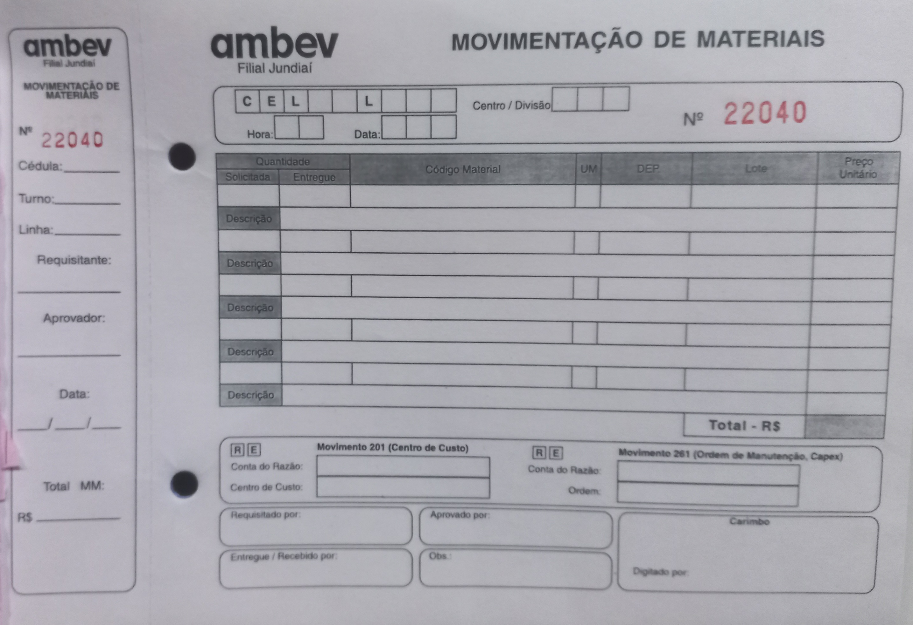
Campo CEL definir a célula como "18"
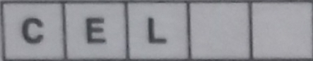
Campo L definir o local como "XAR" de xaroparia
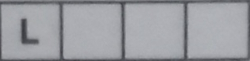
Campo Data adicione a data atual, exemplo: "1/7/24" sendo dia 1, mês 7 e ano 2024
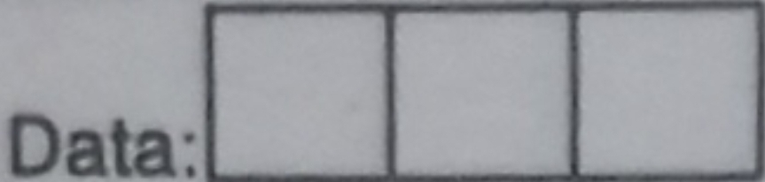
Campo Requisitado por: adicione seu nome
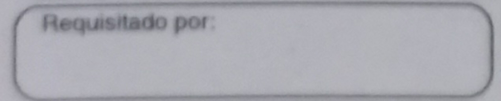
Campo Solicitada adicione quantos bags foram solicitados, caso tenha 6 bags na rua. Defina o campo solicitada como 6.
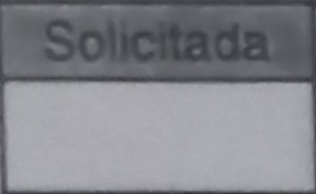
Campo Entregue adicione quantos bags foram entregues pelo operador da empilhadeira
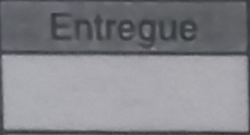
Campo Código Material adicione o código do açúcar. Exemplo: Se for refinado, defina o código como "30003518"; caso seja cristal, defina o código como "30003593"
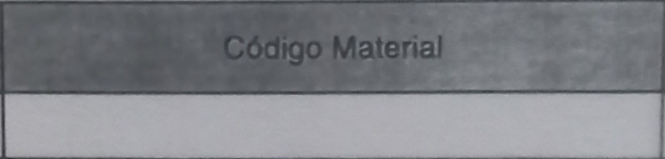
Campo DEP adicione o horário que foi entregue o açúcar. Exemplo: 10:40.
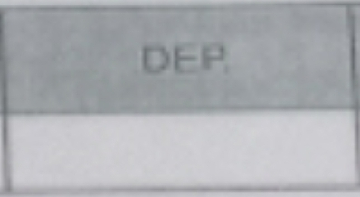
Campo Lote adicione o seu nome.
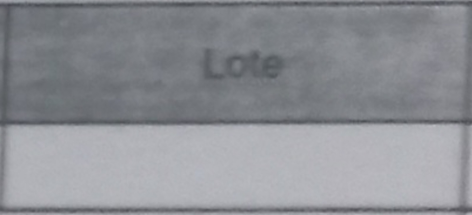
Campo Descrição adicione o nome do açúcar refinado ou cristal.
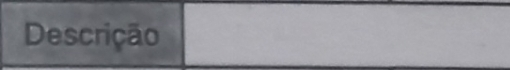
Seguindo essas etapas, a folha mm ficará mais ou menos assim:
COM BASE NO AÇÚCAR REFINADO 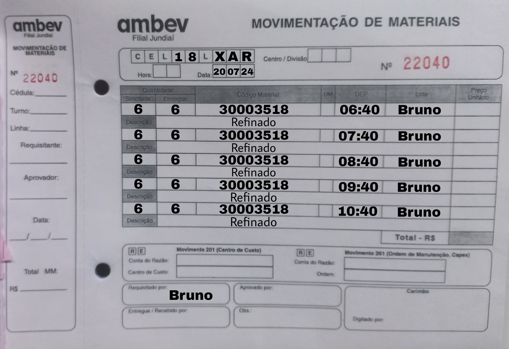
COM BASE NO AÇÚCAR CRISTAL 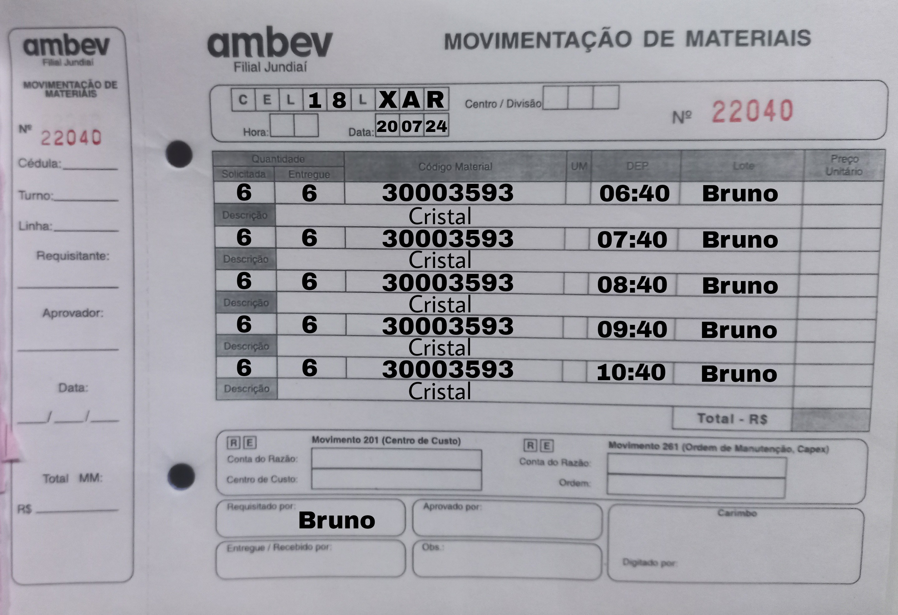
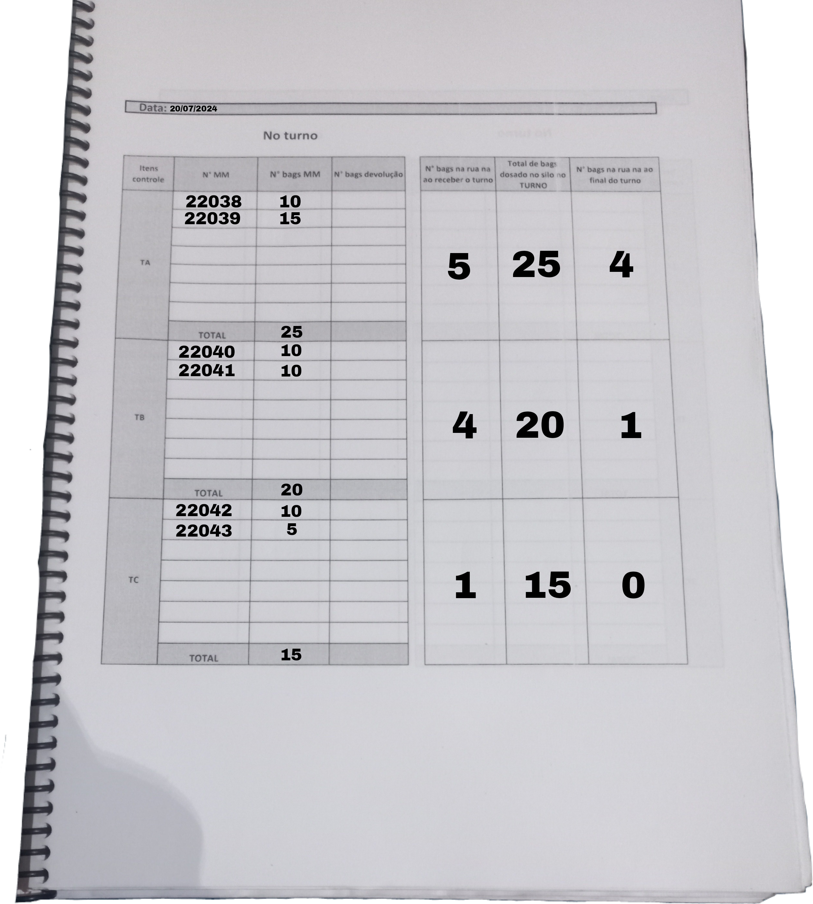
Tabela do turno A:
Neste exemplo, mostra-se que o turno A fez um total de 10 bags na folha mm de número 22038 e 15 na folha mm de n°22039, totalizando 25 a soma das folhas mm. Ao receber o turno, tinha 5 bags na rua deixados pelo turno anterior e deixou 4 bags para o turno seguinte.
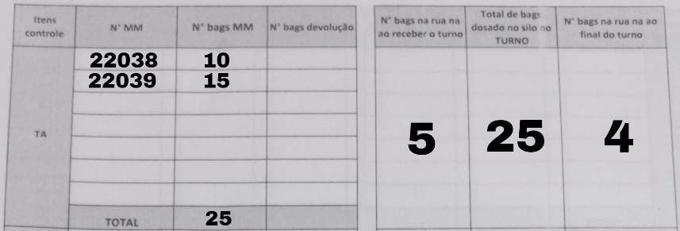
Tabela do turno B: Neste exemplo, mostra-se que o turno A fez um total de 10 bags na folha mm de n°22040 e 10 na folha mm de n°22041, totalizando 20 a soma das folhas mm. Ao receber o turno, tinha 4 bags na rua deixados pelo turno anterior e deixou 1 bags para o turno seguinte. 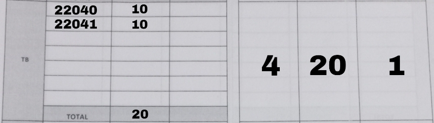
Tabela do turno C: Neste exemplo, mostra-se que o turno A fez um total de 5 bags na folha mm de n°22042 e 10 na folha mm de n° 22043, totalizando 15 a soma das folhas mm. Ao receber o turno, tinha 1 bags na rua deixados pelo turno anterior e deixou 0 bags para o turno seguinte. 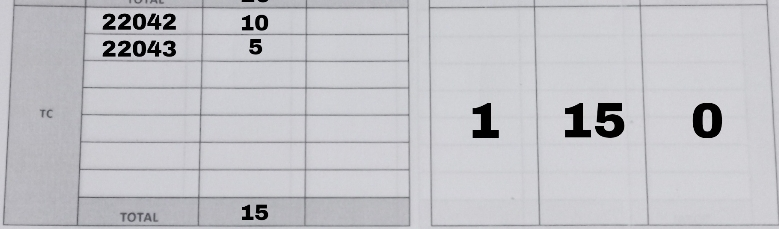